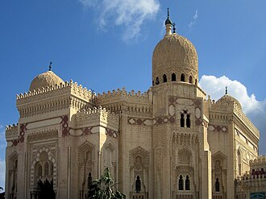

Tanıtım
La mosquée El-Mursi Abul-Abbas est une mosquée d'Alexandrie, en Égypte. Elle est consacrée au saint musulman alexandrin el-Abbas Abul Mursi. Elle se trouve dans le quartier Anfoushi, près de la citadelle de Qaitbay, sur la péninsule de Pharos.
جامع أبو العباس المرسي أو كما يسميه أهل الإسكندرية "جامع المرسي أبو العباس"، أحد أقدم وأشهر المساجد التي بنيت في الأسكندرية في مصر، حيث يتميز بقبابه المميزة الشكل، وهو من أهم ما يميز منطقة أبو العباس في منطقة بحري بالمدينة.
The Abu al-Abbas al-Mursi Mosque is a mosque, mausoleum, and Sufi shrine, located in the Anfoushi neighbourhood of Alexandria, on the north coast of Egypt. The 13th-century mosque is named in honour of Abu'l Abbas al-Mursi, a 13th-century mystic, who is also buried in the same place along with members of the Ashraf family.
Masjid Abu al-Abbas al-Mursi adalah sebuah masjid di Kota Aleksandria. Pembangunan Masjid Abu al-Abbas al-Mursi dilakukan pada tahun 706 H atau 1307 M dengan pembiayaan oleh seorang pedagang kaya bernama Zainuddin Al-Qaththan. Desain Masjid Abu al-Abbas al-Mursi dikerjakan oleh seorang arsitek bernama Mario Rossi ketika Raja Fuad mengadakan perombakan terhadap Kawasan Turki di Distrik Anfusyi. Perombakan terakhir erhadap Masjid Abu al-Abbas al-Mursi diadakan pada masa pemerintahan Raja Faruq.
جامع ابو عباس المرسی مصر کا ایک مسجد جو محافظہ اسکندریہ میں واقع ہے۔
Die Abu-l-Abbas-al-Mursi-Moschee ist eine Moschee in Alexandria, in der sich die Grabstätte von Abu l-ʿAbbas al-Mursi befindet. Das Gebäude wurde nach Entwürfen der italienischen Architekten Eugenio Valzania und Mario Rossi von 1929 bis 1945 erbaut.
La mezquita de Abu al-Abbas al-Mursi es una mezquita egipcia en la ciudad de Alejandría. Está dedicado al sufí murciano andalusí San Abul Abbas al-Mursi, cuya tumba contiene.
A Mesquita de Abu Alabás Almurci é uma mesquita Egípcia na cidade de Alexandria. Ela é dedicada ao santo múrcio-andalusino Sufista Abu Alabás Almurci do século XIII, cujo túmulo abriga. A mesquita está localizado no bairro Anfuxi em Alexandria, perto da Cidadela de Qaitbay.
阿布·阿巴斯·穆尔西清真寺（阿拉伯語：جامع أبو العباس المرسيAbu al-Abbas al-Mursi Mosque) 是埃及亞歷山卓最大的一座清真寺，以13世纪亚历山大 苏菲派圣人阿布·阿巴斯·穆尔西命名，寺内有圣人的墓地。
Мече́ть Абу́-ль-Абба́са аль-Мурси — известная мечеть в Александрии (Египет), которая посвящена александрийскому святому суфию Абуль-Аббасу аль-Мурси. Расположена в александрийском районе Бахри.
El-Mursi Abul Abbas-moskén är en berömd moské i Alexandria, Egypten, tillägnad sufi-helgonet el-Mursi Abul Abbas.
Haritada
Belgeler ve bağlantılar
- Wikipédia — Français
- Wikipédia — العربية
- Wikipédia — English
- Wikipédia — Bahasa Indonesia
- Wikipédia — اردو
- Wikipédia — Deutsch
- Wikipédia — Español
- Wikipédia — Português
- Wikipédia — 中文
- Wikipédia — Русский
- Wikipédia — Svenska
- Wikidata — Q1323845
Veriler: Wikidata (CC0), her 3 ayda bir güncellenir. Yıl, binanın bilinen en eski inşa tarihidir: sonradan camiye dönüştürülmüş bir yapı için (Ayasofya gibi) özgün binanın tarihidir. Fotoğraflar: Wikimedia Commons, yazar ve lisans her fotoğrafın sayfasında.